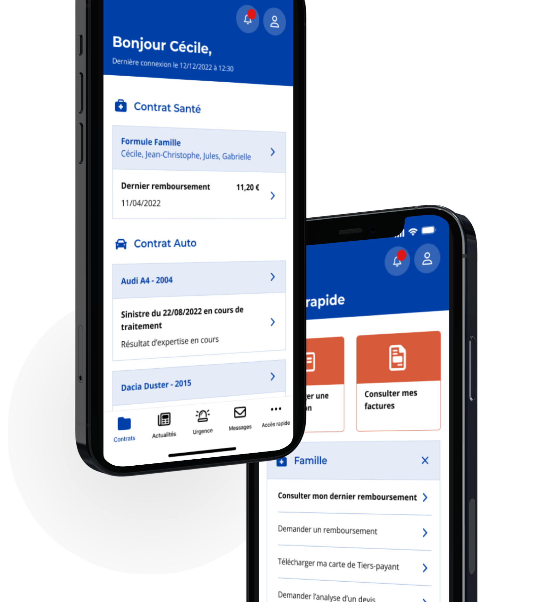
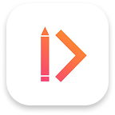
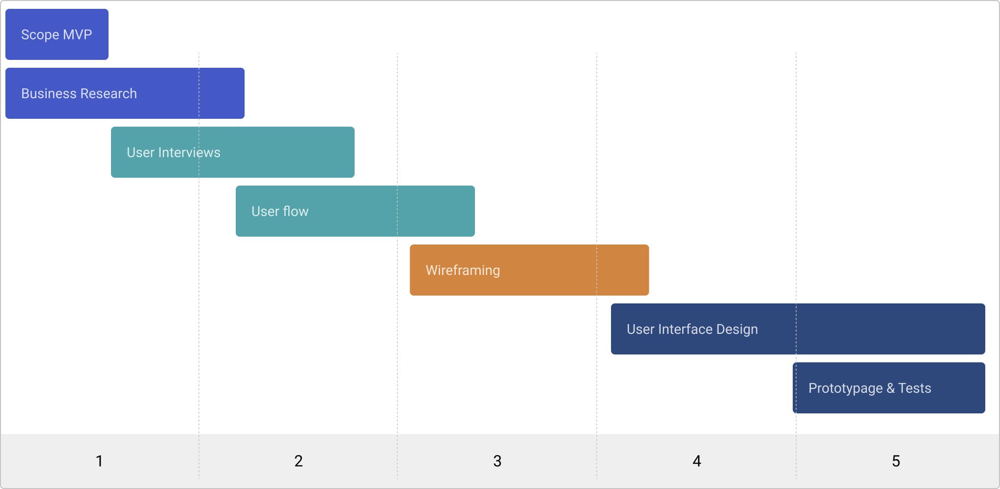
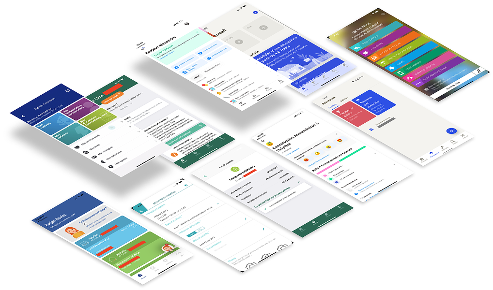
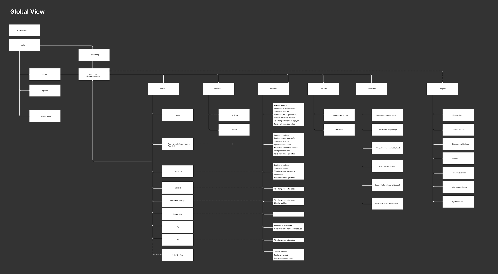
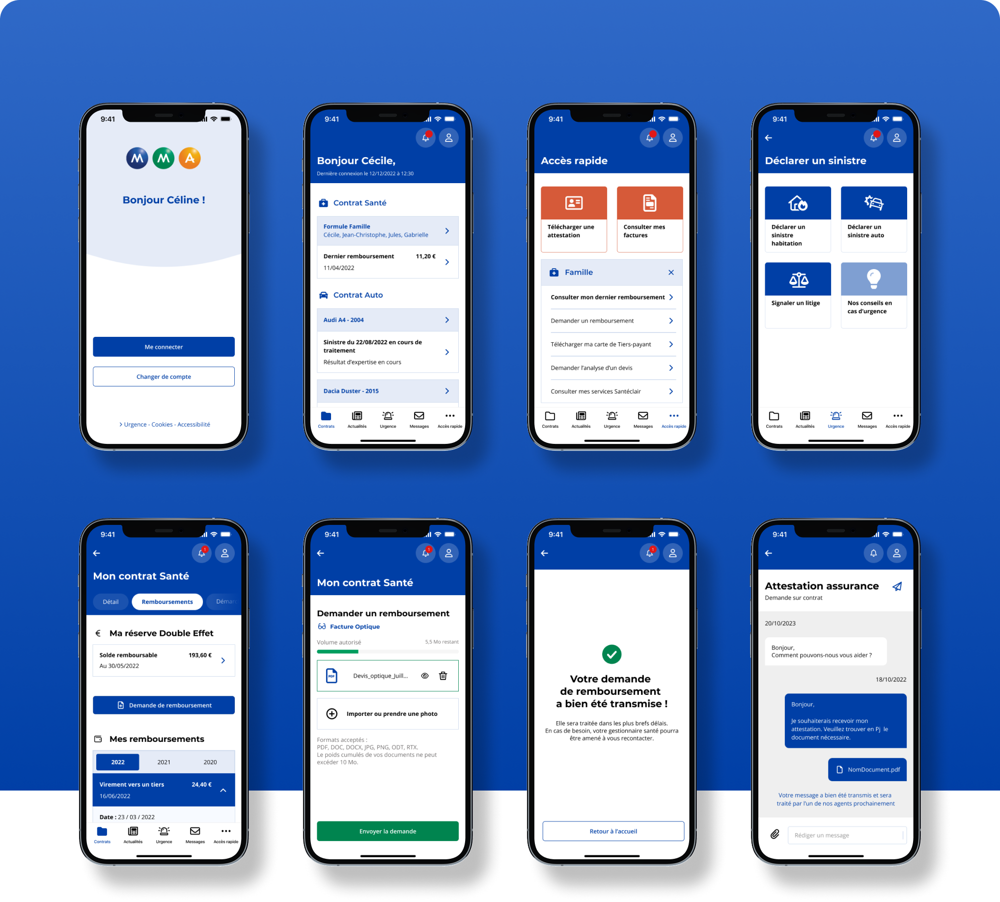
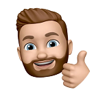

Faciliter l'assurance pour faciliter la vie
Remboursements, litiges, relations avec les agents. Découvrez l’ensemble du process design pour rendre encore plus simple la vie des assurés MMA.

La mission
En tant que Senior Product Designer, j’ai dirigé la création de la toute première application mobile MMA, un acteur majeur de l'assurance en France, j'ai été confronté à un défi passionnant et complexe. Notre objectif était de créer un produit avec une expérience utilisateur exceptionnelle en partant de zéro, le tout en collaborant étroitement avec les équipes produits, marketing et de développement internes. L'une des principales priorités était de concevoir une application qui répondrait aux besoins diversifiés des utilisateurs et clients de MMA dans un large éventail de domaines, notamment la santé, l'habitation, l'automobile, la protection juridique, la chasse, l'assurance scolaire, les accidents de la vie et la multirisque. Pour ce faire, nous avons dû relever plusieurs défis clés :
Compréhension des besoins & recherche
Rechercher et créer des fonctionnalités adaptées aux besoins spécifiques des utilisateurs dans chaque domaine d'assurance.
Navigation intuitive et transverse
Naviguer simplement avec une gamme aussi large de services d'assurance. Organiser les informations de manière logique et aussi simples que possible.
Personnalisation de l’expérience
Intégrer des fonctionnalités de personnalisation et de configuration de l’expérience en fonction des préférences. Ex : authentification, notifications etc.
Sécurité et confidentialité
Priorité absolue de mettre en place des mesures de sécurité robustes pour garantir que les informations sensibles des utilisateurs étaient protégées de manière optimale.
Accessibilité
Créer une interface accessible aux personnes handicapées et/ou déficientes et facile à utiliser pour tous, quel que soit leur niveau de compétence technologique.
Testing
Mener des tests utilisateurs fréquents tout au long du processus de développement pour recueillir des commentaires précieux et apporter des ajustements en conséquence.
Mon rôle
J’ai leadé le product design de l’application Mobile. Durant ce projet j’ai eu l’opportunité de travailler avec les équipes internes composées de Christophe Houze Responsable Organisation Digital UX, Virginie Mahé Chef de projet digital, Rémi Joyaux Product Manager, Maxime Gourloo Proximity Product Owner, Lucie Chevrier UX Designer, Dorian Macerot Assistant Organisation. J’ai mené cette mission en collaboration avec Chris Le Guen Chef de projet de l’agence Team Inside et le soutien de Riham Dir Akilian Product designer chez Monsieur Guiz.
Tâches principales
- Interview et Scope
- Recherche et idéation
- Exécution du design et validation
- Création, intégration et passation du Design system
Design & Research Tool kit
 Miro
Miro Figma
Figma Interview
Interview Card sorting
Card sorting Survey
Survey
ZeroHeightPlanning
Le projet s’est déroulé en 5 grandes phases : définition du scope d’intervention MVP, business research & interviews utilisateurs, userflow & wireframing, conception des interfaces finales et du Design system, prototypage et tests utilisateurs.

Deck de recherche
Concurrence
En collaboration avec l’équipe MMA, nous avons comparé de grands concurrents parmi quelques autres applications du secteur de l'assurance qui possèdent une application et un produit similaires. Nous avons examiné comment ils présentent les informations et organisent leur page d'accueil.
Parmi eux, on retrouve des enseignes comme la GMF, Groupama, Pacifica, mais aussi des acteurs spécialisés (Pure Player) tels qu'Alan et Luko.

Interviews
Afin de mieux comprendre les attentes de nos utilisateurs nous avons mené des focus group et des interviews individuels. Cela a été une étape fondamentale dans notre processus de conception de l'application mobile d'assurance. Ils nous ont permis de découvrir ce qui importe vraiment à nos utilisateurs, de résoudre les problèmes potentiels avant le lancement et de créer une expérience utilisateur exceptionnelle. Pour des raisons de confidentialité les interviews ne peuvent être partagées, mais voici les principaux insights qui ont émergé durant cette phase.
Dashboard personnalisé
Proposer un dashboard personnalisé et évolutif : derniers remboursements, suivre un sinistre, accéder à l’assistance, push des actualités selon la saisonnalité.
Quick actions
Accès rapide aux différentes actions récurrentes selon les typologies de contrat : demander un remboursement, déclarer un sinistre, contacter mon agent, éditer une attestation.
La solution
User flow
Après une réflexion approfondie et la réalisation de plusieurs ateliers de card sorting, nous avons entamé le processus de cartographie des parcours utilisateurs. Notre objectif était de perfectionner la navigation et de structurer l'architecture de l'information de manière à maintenir un pattern cohérent, assurant ainsi une compréhension aisée pour l'ensemble de nos utilisateurs.

Wireframe
Au cours de la phase de wireframing, nous avons matérialisé les concepts de navigation et d'architecture de l'information, qui ont constitué une base solide pour la conception des interfaces finales. En parallèle, nous avons également travaillé sur différentes features en réponse aux attentes et problématiques de nos utilisateurs. C’est en intégrant tous ces éléments que nous avons minutieusement conçu les patterns et la disposition des interactions clés, tels que les boutons, les menus de navigation et les zones de contenu.
L'approche collaborative a joué un rôle central dans la réussite de cette phase. Elle nous a offert l'opportunité de recueillir des idées précieuses et des retours de l’ensemble des parties prenantes, ce qui a grandement enrichi notre compréhension des besoins des utilisateurs.

User interface
Après la validation de nos concepts, j'ai travaillé sur l'UI finale des interfaces. La création d'un design system était essentielle à la réussite d'un tel projet. Cela nous a permis de concevoir une interface utilisateur soigneusement pensée et parfaitement adaptée à tous les devices.

Prototype
Retrouvez le prototype sur Figma. Pour des raisons de confidentialité le prototype n’est pas accessible pour le moment.
Les impacts
L’application étant en cours de développement je ne suis pas en mesure de donner plus d’informations sur l’impact de notre travail. Les données seront actualisées prochainement.
Remerciements
Merci à toute l’équipe MMA

Rémi Joyaux